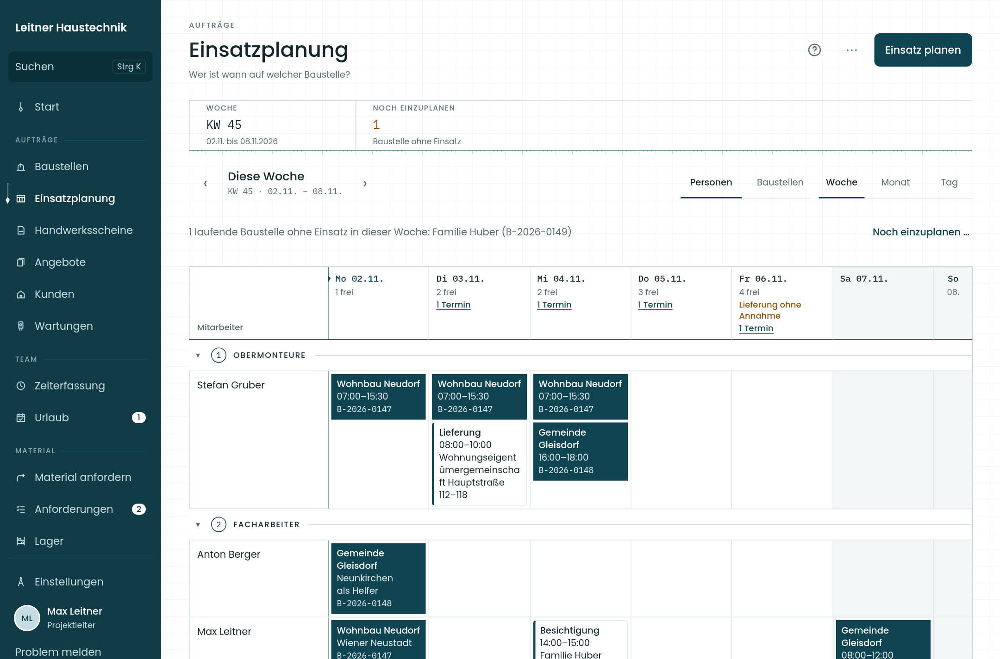
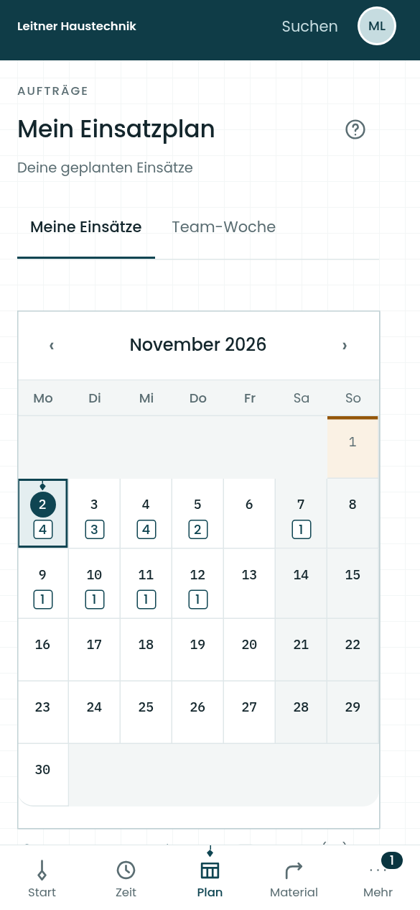
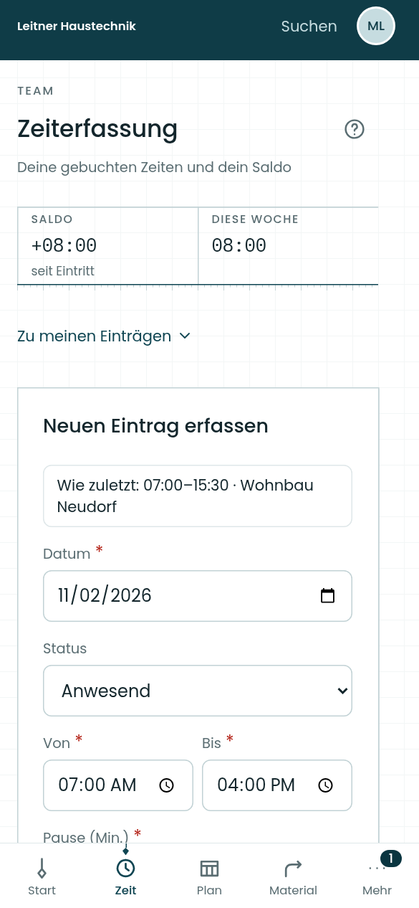
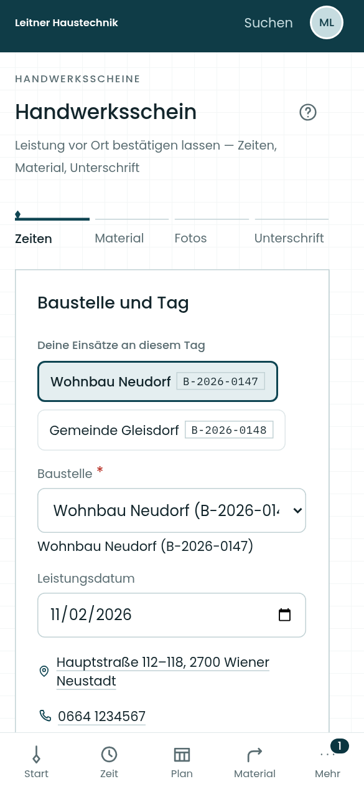

Kunden & Baustellen
Kontakte, Aufträge, Termine und Dokumente in verknüpften Akten.
Details zu Kunden & BaustellenFÜR INSTALLATIONSBETRIEBE IN ÖSTERREICH
Baustelle und Büro.
Endlich im selben Plan.
Senklot ist die Betriebssoftware für Installationsbetriebe in Österreich. Angebot, Einsatzplanung, Arbeit vor Ort und Rechnung greifen ineinander – mit gemeinsamen Kunden- und Baustellendaten.
Im Browser. Am Handy, Tablet und im Büro.
Persönliche Produktvorführung · etwa 30 Minuten · kostenlos und unverbindlich.


Originalansichten von Senklot · Beispieldaten
EIN BETRIEB. VIELE HANDGRIFFE.
Ein Auftrag beginnt beim Kunden und endet nicht mit dem letzten Handgriff. Senklot verbindet die Planung im Büro mit dem, was auf der Baustelle passiert – bis zum Leistungsnachweis und zur Rechnung.
Kontakte, Aufträge, Termine und Dokumente in verknüpften Akten.
Details zu Kunden & BaustellenArbeitszeiten, Pausen, Zuschläge, Urlaub und Zeitkonten nachvollziehen.
Details zur ZeiterfassungLeistungen, Material, Fotos und Unterschrift direkt vor Ort festhalten.
Details zu digitalen HandwerksscheinenAnfordern, bereitstellen, Bestand führen und Rückgaben bearbeiten.
Details zu Material & LagerKalkulieren, Rechnungen erstellen und offene Zahlungen verfolgen.
Details zu Angeboten & RechnungenAuch dabei: Nachkalkulation · Wiederkehrende Wartungen · DATANORM-Import · Exporte für die Buchhaltung
VOM ERSTEN ANGEBOT BIS ZUR ABRECHNUNG
Zum Beispiel bei einer Heizungsmodernisierung: Ein Auftrag bleibt vom Angebot bis zur Abrechnung mit derselben Baustelle verbunden.
Leistungen und Material kalkulieren. Aus dem angenommenen Angebot die zugehörige Baustelle anlegen.
Team und Termine derselben Baustelle zuordnen. Monteure öffnen ihren persönlichen Einsatzplan am Handy.
Zeiten buchen, Material zuordnen und die ausgeführte Arbeit im Handwerksschein dokumentieren. Vor Ort unterschreiben lassen.
Die dokumentierten Leistungen im Büro prüfen und abrechnen. Zahlungen und den wirtschaftlichen Stand der Baustelle verfolgen.
IM BÜRO GEPLANT. VOR ORT GRIFFBEREIT.
Dein Team sieht seine Einsätze, erfasst Zeiten und fordert Material an. Handwerksscheine halten fest, was geleistet wurde – mit Fotos und digitaler Unterschrift.
Auch mal ohne Empfang.
Zeiten und Materialanforderungen vormerken und später übertragen.


SO SIEHT SENKLOT AUS
Eine durchgängige Oberfläche.
Für die Aufgaben deines Betriebs.
Wer ist wann auf welcher Baustelle? Das Team in einer gemeinsamen Planung.
Echte App-Oberfläche · Ansichten mit Beispieldaten
DER ÜBERBLICK BLEIBT IM BÜRO
Welche Leistungen sind noch nicht verrechnet? Welche Rechnung ist überfällig? Wie stehen gebuchte Stunden und Soll zueinander? Senklot macht die nächsten Schritte sichtbar.
Rechnungen aus Baustellen zusammenstellen, Zahlungen erfassen und fällige Mahnungen bearbeiten. Belege als PDF oder E-Rechnung im ebInterface-Format bereitstellen.
Personal- und Materialkosten je Baustelle auswerten. Fehlende Kostengrundlagen bleiben erkennbar.
Wartungsvereinbarungen, anstehende Ausführungen und den bisherigen Verlauf zusammenhalten.
DIE GLEICHE GRUNDLAGE. DER PASSENDE BLICK.
Rollen und Freigaben bestimmen, wer welche Aufgaben übernimmt. Die Module passen den Funktionsumfang an deinen Betrieb an.
Einsätze kennen. Zeiten buchen. Material anfordern. Arbeit dokumentieren.
Anforderungen bearbeiten, Belege führen und die Abrechnung im Blick behalten.
Das Team planen, Baustellen begleiten und die Ergebnisse auswerten – nach den jeweiligen Rechten.
DER WECHSEL BEGINNT MIT EINEM KLAREN PLAN
Du musst den Umstieg nicht allein planen. Wir klären zuerst, welche Abläufe du brauchst, welche Daten vorhanden sind und wie dein Team sinnvoll startet.
Den Einstieg besprechenIn der kostenlosen Demo gehen wir einen typischen Auftrag durch. Du siehst die tatsächliche Oberfläche und kannst prüfen, ob Senklot zu euren Abläufen passt.
Module, Nutzer, Rollen und vorhandene Daten gemeinsam ansehen. Optionale Einrichtung, mögliche Übernahmen und zusätzliche Leistungen stehen vor der Beauftragung im Angebot.
Nach der Freischaltung mit ausgewählten Aufträgen beginnen. Du richtest selbst ein oder buchst auf Wunsch die begleitete Einrichtung. Den Starttermin stimmen wir gemeinsam ab.
Für Artikeldaten gibt es einen DATANORM-Import. Kunden-, Baustellen- oder andere Altdaten prüfen wir anhand der tatsächlich verfügbaren Exportdateien. Ob eine Übernahme möglich ist und was sie kostet, klären wir vorab. Für die erste Prüfung reicht eine anonymisierte Beispieldatei. So weißt du vor dem Wechsel, womit du rechnen kannst.
KLARE ZUSTÄNDIGKEITEN. NACHVOLLZIEHBARE GRUNDLAGEN.
Hinter Senklot steht Julian Deutsch aus Gleisdorf. Fragen zu Einstieg, Bedienung oder einem Problem besprechen wir direkt.
office@senklot.atEINFÜHRUNGSPREISE FÜR PILOTBETRIEBE
Für den Start mit deinem Betrieb. Die begleitete Einrichtung ist optional. Die Einführungspreise sind ab Vertragsbeginn für 12 Monate garantiert. Die Konditionen für eine Weiterführung vereinbaren wir vor Vertragsabschluss schriftlich.
Monatliche Abrechnung. Die begleitete Einrichtung ist optional.
Für kleine Teams.
Bis 5 Mitarbeiter / Nutzer
129 €/ Monat
Monatlich abgerechnet
Einmalig, netto und ausschließlich auf Wunsch.
Altdatenübernahmen, individuelle Entwicklung und zusätzliche Schulungen sind nicht pauschal enthalten. Zusätzliche Leistungen vereinbaren wir vorab.
Für den gemeinsamen Arbeitsalltag.
6–15 Mitarbeiter / Nutzer
179 €/ Monat
Monatlich abgerechnet
Einmalig, netto und ausschließlich auf Wunsch.
Altdatenübernahmen, individuelle Entwicklung und zusätzliche Schulungen sind nicht pauschal enthalten. Zusätzliche Leistungen vereinbaren wir vorab.
Für größere Mannschaften.
16–30 Mitarbeiter / Nutzer
249 €/ Monat
Monatlich abgerechnet
Einmalig, netto und ausschließlich auf Wunsch.
Altdatenübernahmen, individuelle Entwicklung und zusätzliche Schulungen sind nicht pauschal enthalten. Zusätzliche Leistungen vereinbaren wir vorab.
Alle Preise in Euro, netto zuzüglich gesetzlicher Umsatzsteuer. 10 % Rabatt bei jährlicher Vorauszahlung des Abonnements. Die optionale Einrichtung wird nur bei Buchung berechnet und nicht rabattiert.
Die begleitete Einrichtung ist freiwillig. Bei eigenständigem Start fällt keine Einrichtungsgebühr an. Auf Wunsch unterstützen wir dich bei der Grundkonfiguration, Benutzern und Rollen sowie der Einführung in eure Abläufe. Umfang und Preis stehen vor der Buchung im Angebot; aufwendige Datenübernahmen, individuelle Anpassungen und zusätzliche Schulungen werden separat ausgewiesen.
GUT ZU WISSEN
Bei jährlicher Vorauszahlung erhältst du genau 10 % Rabatt auf das Abonnement. Starter: 1.393,20 € jährlich im Voraus; Team: 1.933,20 € jährlich im Voraus; Betrieb: 2.689,20 € jährlich im Voraus. Alle Beträge netto zuzüglich gesetzlicher Umsatzsteuer. Die begleitete Einrichtung ist optional (Starter: 199,00 €; Team: 399,00 €; Betrieb: 699,00 €). Sie wird nur bei Buchung berechnet und nicht rabattiert.
Ja. Die begleitete Einrichtung ist optional. Wenn du selbst einrichtest, fällt keine Einrichtungsgebühr an. Eine Unterstützung bei Einrichtung oder Datenübernahme kannst du vorab gesondert anfragen.
Die Einführungspreise sind ab Vertragsbeginn für 12 Monate garantiert. Die Konditionen für eine Weiterführung vereinbaren wir vor Vertragsabschluss schriftlich. Die Preisbindung legt keine Mindestvertragslaufzeit fest; Laufzeit und Kündigungsbedingungen stehen im Angebot.
Wir sehen uns einen typischen Auftrag an – vom Angebot über Planung und Dokumentation bis zur Rechnung. Du kannst Fragen stellen und eure bisherigen Abläufe schildern. Für die erste Vorführung planen wir etwa 30 Minuten ein; den Termin stimmen wir mit dir ab. Die Demo ist kostenlos und unverbindlich; durch die Anfrage entsteht kein Abonnement.
Das hängt von euren Abläufen, den gewählten Modulen und den vorhandenen Daten ab. Nach der Demo klären wir den Umfang und stimmen einen Starttermin ab. Eine pauschale Sofortübernahme aller Altdaten wird nicht vorausgesetzt.
Fragen zur Bedienung und Unterstützung bei Fehlern gehören zum regulären Support. Individuelle Anpassungen, zusätzliche Schulungen und umfangreiche Datenübernahmen vereinbaren wir gesondert. Du erreichst uns per E-Mail oder Telefon; konkrete Servicezeiten halten wir im Angebot fest.
Senklot richtet sich an Installationsbetriebe in Österreich. Planung, Außendienst und kaufmännische Aufgaben arbeiten mit verknüpften Kunden- und Baustellendaten.
Nein. Module wie Einsatzplanung, Material, Urlaub, Handwerksscheine, Angebote, Rechnungen, Nachkalkulation, Wartungen und Zeitkonten lassen sich je Betrieb auswählen. Die grundlegenden Kunden-, Baustellen- und Benutzerfunktionen bleiben die Basis.
Ja. Senklot läuft im Browser auf Smartphone, Tablet und Desktop. Die Bedienung passt sich an die Bildschirmgröße an; für den Außendienst gibt es unter anderem den persönlichen Einsatzplan, Zeiterfassung, Materialanforderungen und digitale Handwerksscheine.
Zeiten und Materialanforderungen können bei bestehender Anmeldung im Ausgangsfach vorgemerkt und später übertragen werden. Die App zeigt den Verbindungs- und Übertragungszustand an. Andere Abläufe benötigen eine Verbindung.
DEMO ODER ANFRAGE
In einer persönlichen, kostenlosen Demo zeigen wir dir Senklot an einem typischen Auftrag. Danach lässt sich einschätzen, ob und wie der Einstieg für deinen Betrieb sinnvoll ist.
Die Demo ist kostenlos und unverbindlich.
Etwa 30 Minuten; den Termin stimmen wir mit dir ab.
Du schließt mit der Anfrage kein Abonnement ab.
BRING DEINEN ARBEITSALLTAG INS LOT.
Entdecke, wie Senklot Baustelle und Büro verbindet. Schreib uns für eine persönliche Demo.
Kostenlose Demo anfragen